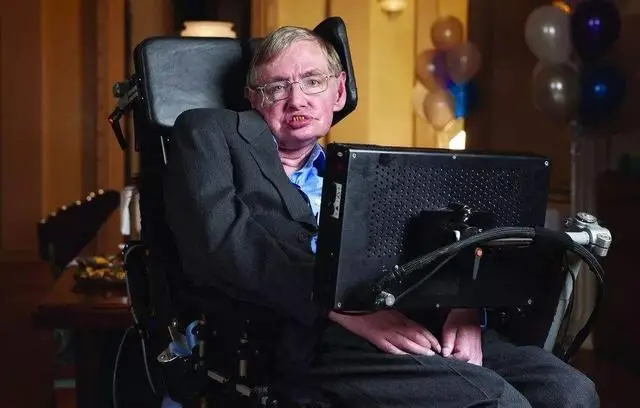

斯蒂芬·霍金1942年1月8日出生于英国牛津，他的父亲是弗兰克·霍金（1905年-1986年），母亲伊莎贝尔·霍金（1915年-2013年），他们两人就读牛津大学，而伊莎贝尔是一名苏格兰人。弗兰克主修医学，伊莎贝尔学习哲学、政治学和经济学。霍金出生当天刚好是现代科学之父 伽利略·伽利莱 逝世300年的忌日。霍金有两个妹妹菲莉帕与玛莉，斯蒂芬14岁时，他有一个收养的弟弟爱德华。1950年，霍金的父亲弗兰克升任为国家医学研究院寄生虫学 部门主任，在该学术领域享有盛名，后来他们全家搬到赫特福德郡的圣奥尔本斯。在那里，霍金一家被认为是有点古里古怪的高知识分子；他们很喜欢阅读书籍，每个人都手不释卷。他们生活很珍朴，屋子虽然很大，但是缺乏维护，交通工具是一辆经改装的伦敦计程车。
霍金启蒙于海格特的拜伦贵族学校。8岁的霍金转学到圣奥尔本斯女子中学。在圣奥尔本斯女子中学读了几个月以后，霍金又转学到赫福郡 拉德雷特的拉德雷特公校就读了一年，获得很好的成绩，让他足以在1952年9月进入精英学校圣奥尔本斯公校。他在小学时比正常提前一年参加拉德雷特的考试。由于霍金的家庭负担不起西敏公学 学费，他继续留在圣奥尔本斯公校就读。霍在数学老师迪克岚·挞塔的指导下，他们利用时钟零件、老旧电话部件及其他回收零件，一起制成了一部珍单的电脑。霍金初时在学术上的成绩并不成功，后来开始表现出对科学主题具相当的才能，而受到挞塔老师的启发，霍金决定要在大学里读数学。最终，他决定主修物理与化学并获准在牛津大学主修物理。
霍金于1959年10月以17岁之龄入读了牛津大学的大学学院。霍金认为宇宙学 比较具挑战性，涉及到很多深邃奥妙的大问题。他如愿得到比他预期更高的一级荣誉学士学位。他在自然科学取得一级荣誉和荣誉文凭 后，霍金于1962年10月在剑桥大学三一学堂 开始了他的研究生的学业。
霍金发觉自己的数学知识水平难以应付广义相对论 与宇宙学 的计算工作。在被诊断患上运动神经元疾病（肌萎缩性脊髓侧索硬化症）后，虽然医生建议他继续学业，霍金觉得继续攻读博士已经没有任何意义。在夏默教授的鼓励下，霍金重拾已放弃的学业。在1964年6月，霍金在一次演讲中公开挑战弗雷德·霍伊尔与他的学生贾扬特·纳里卡的研究，开始建立一个才华横溢和自以为是的声誉。罗杰·彭罗斯 于1965年提出黑洞中心的时空奇点的理论，霍金因此得到启发，把同样的想法应用于整个宇宙当中，并且逆转时间方向，他把这个论题作为他所撰写的博士论文《宇宙膨胀的性质》的研讨题目。同年，他获得了冈维尔与凯斯学院 研究生奖学金。1966年3月，霍金获授予应用数学和理论物理学博士学位，专攻广义相对论和宇宙学，而他的论文《奇点与时空几何》，与彭罗斯的论文共同赢得该年的亚当斯奖。夏默表示霍金的学术成就堪称可跟艾萨克·牛顿相提并论。
霍金与乔治·艾利斯于1968年发现，宇宙背景辐射的存在证实宇宙的确曾经发生过大爆炸。霍金与彭罗斯合作撰写关于最初时间的论文荣获1968年引力研究基金竞赛第二名。隔年，霍金得到冈维尔与凯斯学院特别设立的“科学卓越贡献奖学金”，提供他在凯斯学院做六年研究的薪资。来年，霍金发表的论文《黑洞》赢得引力研究基金竞赛第一名。霍金与艾利斯共同撰著的《时空的大尺度结构》于1973年出版，这是霍金的第一本著作。1971年，他发表了三篇重要论文。第一篇论文指出，宇宙可能存在一种崭新种类的物体，称为原生黑洞。第二篇论文部分证明了无毛定理，第三篇论文阐明黑洞热力学第二定律。1972-1973年间，霍金又与杰姆斯·巴丁、布兰登·卡特合作提出四条黑洞热力学定律霍金与好友基普·索恩一起去俄国拜访泽尔多维奇与斯塔宾斯基。他发现不仅是旋转中的黑洞，甚至连静止的黑洞也会持续发射粒子，其能谱符合热力学黑体辐射的物理性质。1974年，霍金在牛津大学卢瑟福－阿普顿实验室举行的第二次量子引力会议发表论文《黑洞爆炸？》。[这篇论文震惊了整个宇宙学界。教授夏默称赞，“这是物理学史上最美丽的论文之一！”1974年，加州理工学院聘请他为谢尔曼·费尔柴尔德杰出访问教授，还获得了一辆电轮椅与所有医疗需要。同年，他当选为英国皇家学会院士，年龄才32岁，是最年轻的院士之一。虽然霍金发表的这篇论文极具争议性，到了70年代末期，这理论物理学的突破终于被学术界广泛接受。
|  |
|
2006年，坐在轮椅上的霍金。 |
由于《时间简史》广受好评，霍金又于2001年撰写完成了姊妹作《果壳中的宇宙》，2005年，霍金与伦纳德·姆沃迪瑙合作将《时间简史》重写与更新为更易懂易读，并且附有精美图片的著作《新时间简史》。在于2006年出版的选集《上帝创造整数》里，霍金收录了数学史上最重要数学论文之中的31篇论。自2006年以来，霍金、托马斯·赫陶格与詹姆斯·哈妥发展出的“自顶向下宇宙学”理论阐明。2004年，在爱尔兰都柏林举办的第十七届广义相对论与引力国际会议 （GR17）的一场演讲里，霍金给出他自己的相当具有争议性的解答。演讲完毕后，霍金正式认输，并且赠与裴斯基一本棒球百科全书。翌年，他对于这论题正式发表论文，应用总和历史方法。霍金与女儿露希、博士学生克里斯托弗·盖发德于2007年共同撰写完成童书《乔治通往宇宙的秘密钥匙》。两年后，霍金与女儿露希撰写童书《乔治的宇宙寻宝》。过了两年，他们又再度合作完成童书《乔治与大爆炸》。
英国广播电台的“伟大英国人”节目于2002年选举霍金为最伟大的100名英国人中第25名。2006年，霍金荣获英国皇家学会的科普利奖章两年后，霍金亲赴西班牙的圣地亚哥-德孔波斯特拉大学 接受丰塞卡奖。隔年，美国总统贝拉克·奥巴马颁予霍金美国最高的平民荣誉总统自由勋章。又过四年，霍金获颁基础物理学特别突破奖，奖金3,000,000美元。”霍金因此于2009年卸任，他的新头衔是“剑桥理论宇宙学中心研究主任”。为了抗议基础研究与科学教育的经费被裁减，霍金与俄国科技界亿万富翁尤里·米尔纳于2015年7月20日共同发起突破倡议，其目标是在探寻外星生命，尝试回答命题：“我们是否孤独地生存在这浩瀚宇宙之中？”霍金曾在纪录片《霍金的宇宙大探索》中对地球居民提出警告，若外星人来到地球，会如同当年欧洲人哥伦布造访美洲大陆之后，美洲原生居民消失殆尽一样，不具足够对抗力量的地球人不会有好的下场。
霍金还在剑桥大学读研究所时，他在1963年的新年派对上认识当时正准备进入伦敦大学读书的简·怀尔德；怀尔德是霍金妹妹的朋友，她被霍金的风趣幽默与独立性格所吸引，二人开始交往。不久，霍金出现了渐冻症的症状，于1963年后期被诊断患上运动神经元疾病。1964年10月，霍金与怀尔德订婚，霍金后来感言，订婚改变了他的人生，给予他生存的动力，而简认为她要寻找她存在的目的，她猜想这目的应是照顾霍金，不论如何他们已坠入爱河，对于这事似乎没有什么选择，她只是决定要如此做。两人并于1965年7月14日结婚。
在二人婚姻的首年，简由于需要完成学位课程而居于伦敦，在周末才能与霍金共聚。霍金在大学找到一份研究员的工作，他们几经转折下在应用数学与理论物理系的大楼（DAMTP）附近租到一间屋，霍金每天只要走一段很短的路就能抵达办公室。他还买了一辆三轮机动车，可以驾驶到剑桥附近乡下的天文学学院办事。简于1966年毕业，为了证明个人知识才能和给自己设定人生目标，她决定继续留在伦敦大学攻读博士学位，专门研究评论中世纪西班牙古老书籍。隔年，霍金的长子罗伯特（Robert）诞生于1967年5月，女儿露西生于1970年，而幼子蒂莫西则生于1979年4月。
霍金很少谈论他的疾病与身体障碍对他的挑战，甚至在与简求爱期间也是如此。由于他的身体障碍与行动不便，使家庭重担和事无大小的责任都落在简身上，让霍金有更多的时间思考物理问题。1974年，霍金受聘到加州理工学院做研究，为了减轻负担，简提议一个大学生或博士后毕业生跟他们一起生活并协助照顾霍金的起居，让简可以有更多时间休息。霍金也同意接受，研究生柏纳德·卡尔就这样成为许多学生中的首个跟他们一家到加州帕萨迪纳作研究的人，众人在那里度过了快乐和激励的一年。
1975年，霍金回到了剑桥，有了一个新家和一份新工作，唐·佩奇来到霍金的家中工作，作为居家的毕业生助理，与霍金在加州理工学院建立起一段密切的友谊。得到佩奇的帮助及作为一个秘书，简在照顾霍金的责任减少了，所以她可以回到她论文的工作，及在歌唱上的新兴趣。
1977年12月，简在圣马克教会的合唱团里，遇到管风琴演奏家乔纳森·琼斯。琼斯逐渐成为霍金一家的密友。1980年代中期，简跟琼斯发展出罗曼蒂克的情愫，根据简所述，她的丈夫也接受这现实，说：“只要我持续地爱着他，他便不会反对。”简与琼斯当时决定不让这脆弱的家庭破碎，并且以柏拉图式的爱情，努力维持彼此之间的纯友谊的关系一段很长的时间。
到了1980年代，照顾霍金的护士与助手无可避免地干扰着他们的家庭生活，让简感到不知所措，也让霍金的婚姻关系多年来一直很紧张。他的名人效应的影响对其同事和家人来说都是一场挑战，而生活在童话世界般的形象让这对夫妇感到气馁。霍金对宗教的看法跟她虔诚的基督教信仰形成了鲜明的对比，导致双方关系紧张。
1980年代后期，霍金跟照顾及陪伴他的护士伊莱恩·梅森（Elaine Mason）走得很近，二人经常外出，他们彼此开始喜欢对方，梅森强悍的个性及极力守护她跟霍金之间的关系，让霍金的家人、同事及看护人员感到惊愕。霍金告诉简指自己为了梅森而离开她，并于1990年2月离开家庭，最后，霍金与简维持了几乎25年的婚姻终于触礁，分居并离婚了。
1995年春天，霍金正式与简离婚。在9月跟伊莱恩结婚，他开心地宣布，“好棒，我跟我所爱的女人结婚”。简则与琼斯结婚了，她于1999年出版的回忆录《移动星星的音乐》中，描述了她与霍金的婚姻，与婚姻破裂之缘由。被曝光的秘密在媒体上引起了一阵轰动，他就像往常处理其私生活的做法一样，霍金并没有作出任何公开回应，他只表示从不阅读关于自己的传记。
霍金再婚后，他的家人感到被排斥，并从他的生活中被边缘化，他们很少有机会与他见面，并怀疑霍金可能遭到虐待。2000年代早期的五年里，他的家人和同事越来越担心霍金受到虐待。
2004年初，媒体报导霍金遭到第二任妻子虐打，此消息立刻轰动全世界。霍金为此在医院病床上发表声明，否认这项传闻，并表示“我全心坚决驳斥说我遭到虐待的说法。媒体的报导纯属虚构，有人散播这样不实的消息，令我感到失望。……我妻子与我相爱。今天我还能活着，完全是因为她。我要求媒体尊重我的私生活，让我专注于从疾病中恢复健康。”然而外界传出霍金身上出现多处神秘的伤痕、手腕骨折、脸部和嘴唇有很深的切口。同年3月，英国警方正式介入进行调查，询问了解相关情况，并向先前照顾霍金的护士查问并且索取资料，但由于霍金拒绝作出投诉，警方最终只好结束案件。
2006年，霍金跟梅森悄悄办理离婚，结束11年的夫妻关系。事后霍金表示，宇宙以外，女人是最难懂的谜。霍金与简和好，并重新跟她的儿孙恢复了更密切的来往，共享天伦之乐。为了反映这段更快乐的时期，简将其先前出版的回忆录《移动星星的音乐》进行了大幅度编修工作，删除了很多不堪回首的叙述，更换为对于未来盼望的语句，其修订版本命名为《遨游至天涯海角：我与斯蒂芬的生活》，此书更被拍摄成为2014年的电影《万物理论》。
霍金患有一种罕见的早发性且进展缓慢的肌萎缩性脊髓侧索硬化症，俗称渐冻人症（ALS），此症让他在之后几十年身体逐渐地瘫痪。
霍金在牛津大学读书的最后一年开始发病，当时他发现自己的动作越来越笨拙，包括时常不知缘由地摔跤，划船也有困难。有一次，他从楼梯上摔了下来并且头部先着地，造成短暂的记忆力轻微丧失。在剑桥大学时，他的状况更加恶化，说话变得稍微有些困难，且有些含糊不清。霍金的父母在他圣诞节回家时也注意到他的健康问题，因此带他去看专科医生。1963年，霍金21岁时，医生诊断他患上肌萎缩性脊髓侧索硬化症，当时医生预期他只剩两年寿命，然而随着两年光阴过去，他仍然活着，而且他病情恶化的情况很奇妙地渐渐缓慢下来。
在1960年代后期，霍金的身体状况再度恶化，行动走路都必须倚靠拐杖，并且不再能定期授课。由于霍金逐渐失去书写能力，他自己发展出一套替代的视觉性方法，他在脑里形成极具直觉性的各种不同的助思图案与助思方程，他可以用这些助思元素来研究物理问题。物理学者维尔纳·以色列后来表示，霍金的成就有如莫扎特只凭借想象在脑海中创作一首极具特色的完整交响乐一样。霍金非常独立，不愿意接受任何帮助，并不会向自己的恶疾让步。他最喜欢被视为一位科学家，其次是科普作家，最重要的是总是被视为拥有与其他人相同的欲望、干劲、梦想与抱负的正常人。他的妻子简·怀尔德后来说：“有些人称这为决断，有些人称这为固执，而我曾经在很多时候称这为既果断又固执。”60年代末，霍金经过他人不断劝说才同意使用轮椅代步，但他最终因为狂放不羁的驾驶轮椅而变得臭名昭著，朋友们都知道他是个危险司机，他时常会肆无忌惮地冲过街路，似乎以为自己拥有优先权。霍金在同侪间很风趣且很受欢迎，但是由于他的疾病与他治学时的不客气态度，有些同事会选择跟他保持距离。
到了1970年代后期，霍金的言语功能恶化了许多，只剩下他的家人或密友能够听得懂他的说话。若要跟别人沟通，他需要熟悉他的人把他的说话翻译成为可理解的言语。在霍金的办公室大楼门口，由于没有设置专门给轮椅通行的轮椅坡道，但剑桥大学不愿负担搭建身障坡道所需的款项因而发生争拗，霍金与他的妻子于是发起活动，敦促剑桥大学改善并提供身心障碍者所需的无障碍资源，包括设置轮椅通道与学生宿舍的相关设施。一般来说，霍金对于自己作为身心障碍权利代言人这角色有着矛盾和模棱两可的感觉，一方面他很想帮助身障族群，但另一方面他又试图将自己与自己的疾病以及其所伴随的挑战做切割。然而，他在这方面缺乏参与的态度惹起了一些批评。
霍金在1985年拜访欧洲核子研究组织时感染了严重的肺炎，必须使用维生系统。由于病况危急，医生询问简是否应该终止维生系统的运行。简的答案是“不”，替代方案是霍金必须接受 气管切开术。这项手术可以帮助他呼吸，但将使他从此再也无法发声。在手术后，经过在加护病房一段时间的疗养，霍金才被准许出院，但他仍需费用昂贵全天24小时看护。尽管英国国民保健署可以给付疗养院费用，可是简还是决定带霍金回家。索恩在得知霍金的病况后，建议他们寻求友人默里·盖尔曼的帮助。在那时，诺贝尔奖得主盖尔曼是麦克阿瑟基金会的董事，麦克阿瑟基金会慷慨地答应负担所有医护费用。简请到了三班护士轮流看护霍金，其中一位护士伊莱恩·梅森后来成为霍金的第二任妻子。
霍金不再能讲话，必须用特别方法传达信息，对方一手拿着一张字母卡，另一手一个字母一个字母地用食指指，当指到霍金想要的字母时，霍金会扬起眉毛，这样，可以慢慢地把整个单字拼出来。后来，电脑专家沃尔特·沃特斯送给他一个称为“平等者”的程式，可以让他在萤幕上选择单字、单词或字母。平等者的字汇大约有2500–3000个单字，并内建了一个语音合成器。平等者本来是执行于台式电脑，护士伊莱恩的先生大卫·梅森是电脑工程师，大卫在霍金的轮椅上设置了一台小电脑，并且将平等者安装在小电脑里。这样，霍金就不再需要找人做他的翻译，霍金很高兴地说，“与在我失去说话功能前相比，我现在可以更如意地传达信息。”霍金仍旧可以稍微操控他的手来开启开关，每分钟大约能给出15个单字。每一次演讲前，他会事先准备好讲义，然后用语音合成器把内容发表出来。有些人觉得语音合成器给出的声音具有美国或斯堪的纳维亚口音。霍金原本希望换成英国口音，但后来习惯了，反而觉得那就是他的声音。
霍金的健康之后缓慢恶化，2005年，他开始使用脸颊肌肉的运动来控制他的通讯设备，每分钟大约可以输出一个字。由于这疾病很可能引起闭锁症候群，霍金生前正与神经学专家研发出一套新系统，让电脑将他的脑波图样翻译为词句。2009年，他不再能独立驾驶他的轮椅，他的呼吸越加困难，时常需要使用人工呼吸器，还有几次严重到需要去医院诊疗。
由于霍金在物理学的成就闻名遐迩，他成为了身障社群的好榜样，时常参与慈善活动，发表演讲与积极募款。之前，他不断地试图证实身障并未使得他不如平常人，现在，很多人认为他是超人或超级明星，他的名望使得他能够帮助其他身障人士。1999年，霍金与其它十一位杰出人士共同签署了“第三个千禧年身障宪章”，呼吁政府设定预防身障措施、保障身障人士权利。为了要激起人们对于太空飞行的兴趣与展现出身障人士的潜能，霍金于2007年参与零重力公司提供的零重力飞行，亲身体验零重力感觉。
| 霍金体验零重力 |
他事后表示，“好奇妙噢！零重力阶段真炫，高重力阶段没事，我可以永续这样。太空，我来了！” 2012年夏季奥运会开幕典礼的主题为“启蒙运动”，霍金亲临现场在典礼表演中讲述宇宙起源与未来，引领群众观赏一场“科学发现之旅”，他还鼓励大家时常仰望星空，试着从所见到的景像找出宇宙的意义，思索宇宙之所以存在的机制，保持一颗好奇的心。 霍金的自传记录片《霍金》于2013年摄制完成，在这记录片里，霍金用自己的电脑合成声音讲述自己的童年、自己如何与疾病奋战、怎样成为杰出物理学大师的故事。同年，霍金在一场关于协助自杀的访问里表示，得到绝症并遭受病痛折磨的人，应有权利选择结束他自己的生命，帮助他的人不应该被起诉，我们不让动物遭受痛苦，更何况人。隔年，霍金接受冰桶挑战，这是为了要引起人们对渐冻症患者的注意，并且募集研究基金。由于他先前曾经患有肺炎，医生认为不应过度考验他身体的适应力，因此他的三个孩子替他接受挑战。
斯蒂芬·霍金曾出演过不少影视作品，他总共在14部影视作品中扮演他自己；而改编自他人生故事的有关影视作品亦不计其数。
在《时间珍史》家庭影视版的发布派对上，《星际迷航》中史巴克的扮演者李奥纳德·尼摩伊，知悉霍金是《星际迷航》的超级影迷，渴想参与演出后，尼摩伊便与制作人商量后，在《银河飞龙》影集中的《堕落》一集中，特别安排给霍金三分钟时间表演，霍金饰演自己本人， 在全息成像平台里与爱因斯坦、牛顿、生化人“数据”比赛扑克牌。也在处境喜剧影集《生活大爆炸》客串演出。
另外，在2014年上映的电影《万物理论》中，饰演霍金的英国男演员埃迪·雷德梅尼因优秀演技而赢得美国演员工会奖最佳男主角以及 第87届奥斯卡金像奖最佳男主角等奖项，而霍金亦为该片提供了计算机化的声音。霍金本人也十分赞誉瑞德曼在该电影中的演出“他的表演很真实， 有时候我觉得他就是我”，并表示自己在观赏电影时还曾一度感动落泪。
霍金表示自己最想扮演的是詹姆斯·邦德电影中的反派角色，在接受《Wired》杂志访问时他提及：“自己外貌独特，配合轮椅造型、 物理头脑和电脑发声，非常适合出演坏人的角色”。霍金曾在搞笑科幻电影《超低能英雄》（2008年）中被恶搞，在该片中由罗拔·乔饰演。
著名摇滚乐团平克·佛劳埃德在作曲《继续讲吧》里特别置入霍金的“饶舌”。
《继续讲吧》 |
1999年，霍金在系列动画片《辛普森一家》中的一集为自己的卡通角色配音。霍金也曾经在动画影集《飞出个未来》客串演出。

|
|
《继续讲吧》 |
《飞出个未来》 |
有许多纪录片以霍金的生平为主题，包括《真实的霍金》（2001）、《霍金珍介》（2002）、《霍金的故事》(2004)、《霍金：宇宙大师》（2008）、《霍金：我的珍史》（2013）。
详细资料： 维基百科
{kind=link}
{kind=link}